本次修正替代上一段录屏：心情与专注上下排列，习惯与紧凑复盘并排，不再默认放巨大空白卡。编辑前后卡片尺寸不变；直接用卡片上的 S/M/L 或右下角拖拉调整，拖动手柄改变位置。心情支持紧凑／横向两种尺寸，不强行提供空白大号。调整中的卡片优先保持位置，邻居让位；撤销同时恢复位置与尺寸。仍是实际本地网页，不是重新设计的一张静态图。
这是本地网页的检查材料，不是 Mac 安装包。截图使用虚构记录，未由截图脚本重排默认卡片；未读取或修改你的浏览器数据。已有自定义布局仍保留，只有“恢复布局”才会切换到新的推荐排版。
编辑模式保持尺寸 → 心情横向变宽 → 欢迎卡 M／S → 撤销还原 → 习惯尺寸切换 → 真鼠标拖动 → 完成并刷新。新视频使用独立文件名，避免看到上一版缓存。
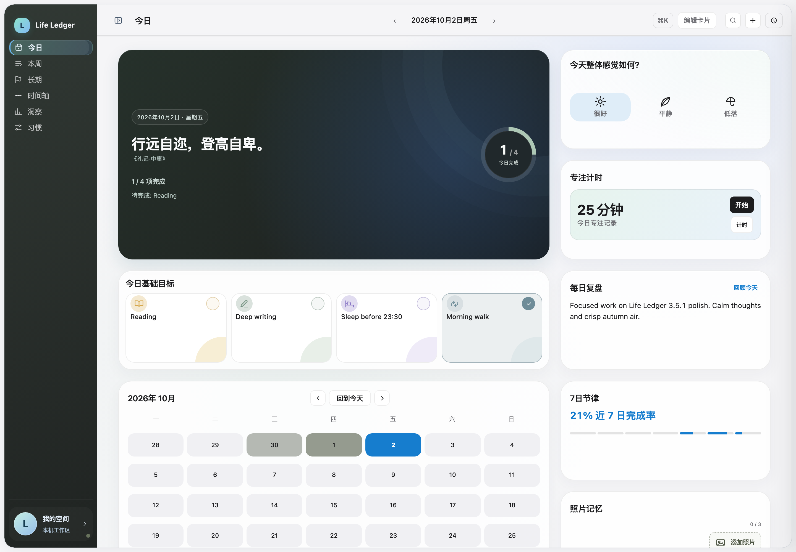
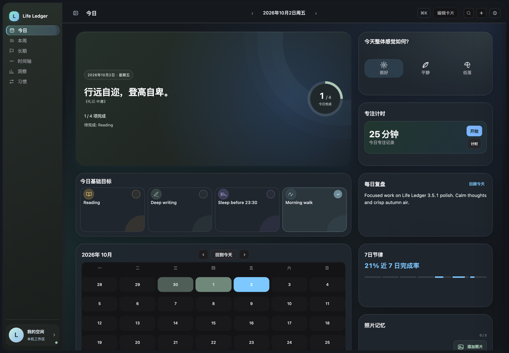
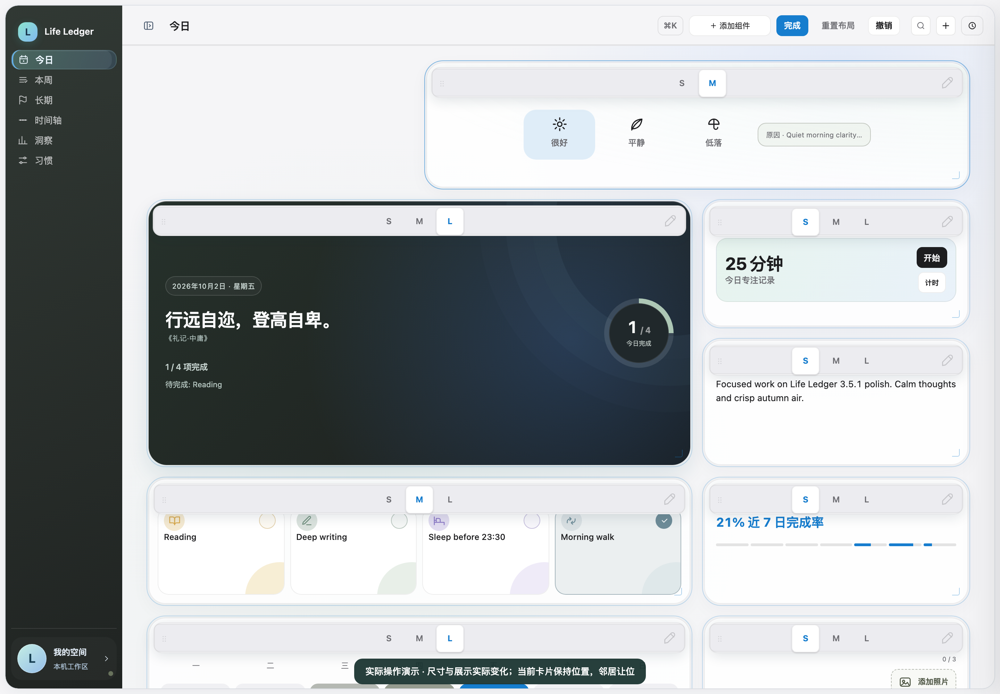
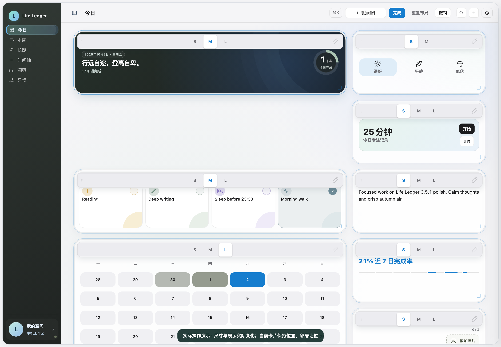
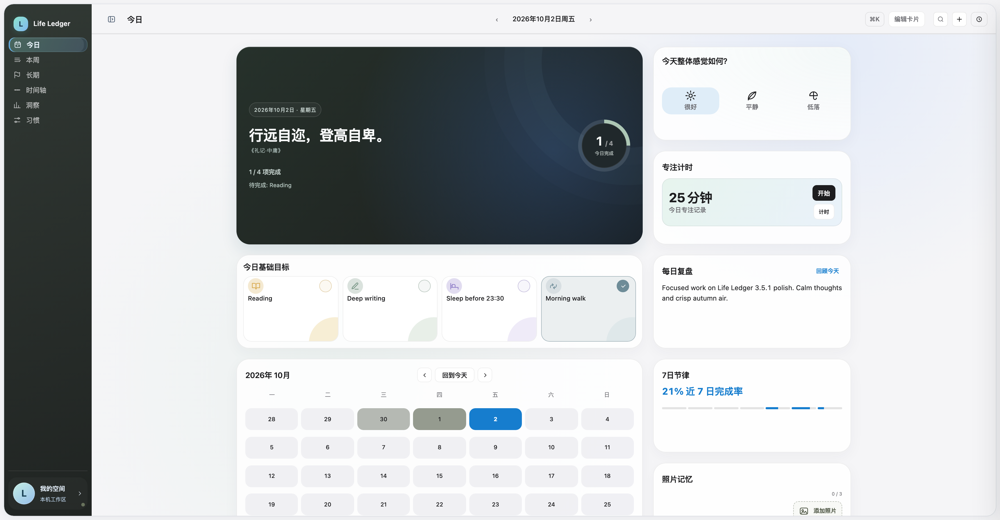
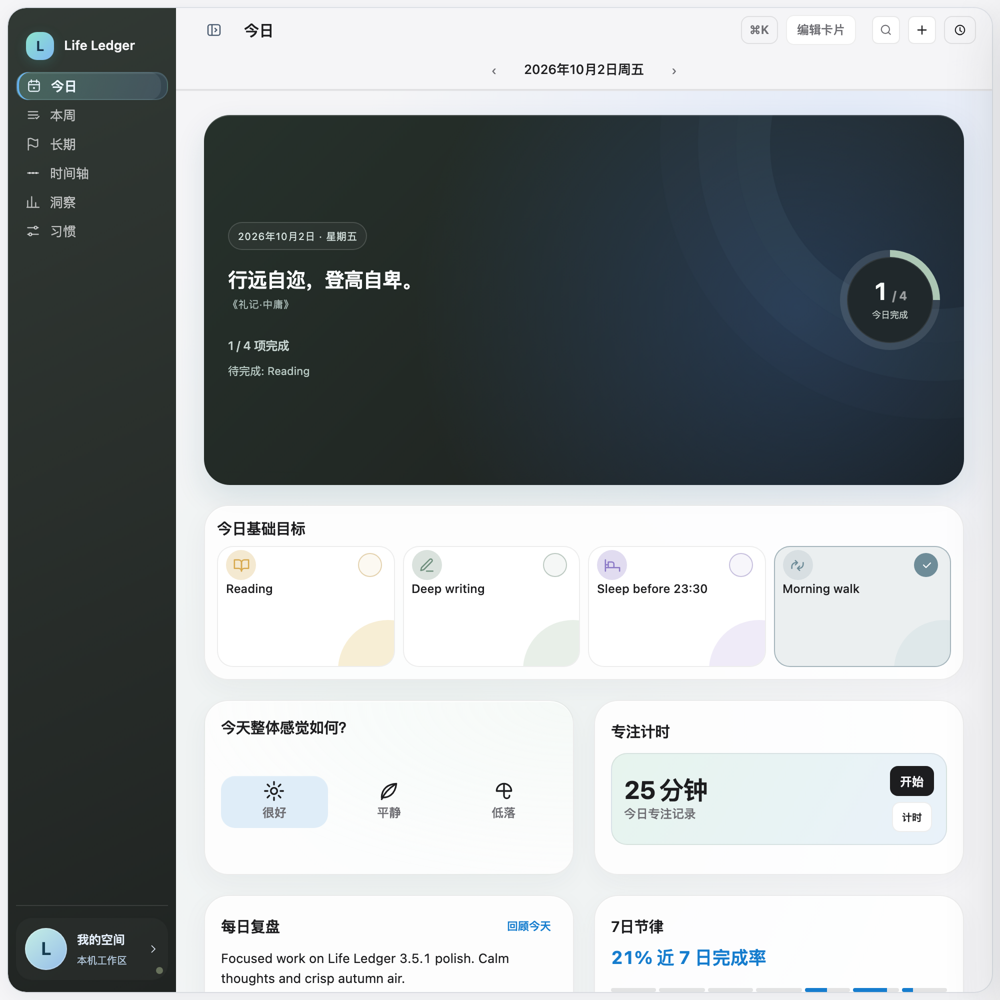
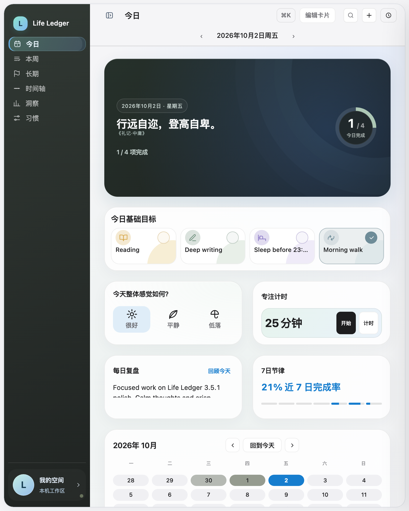
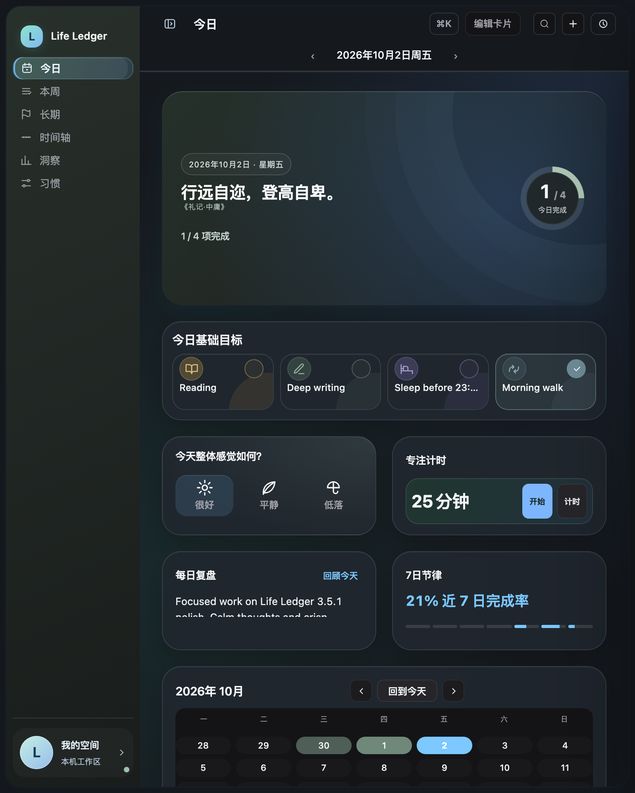
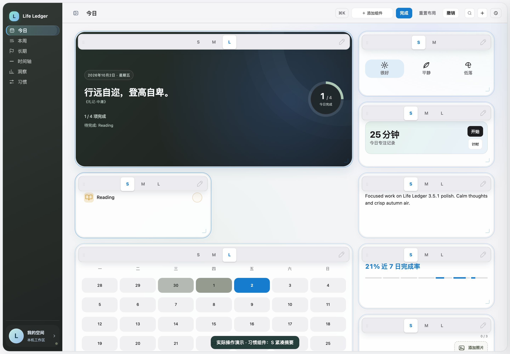
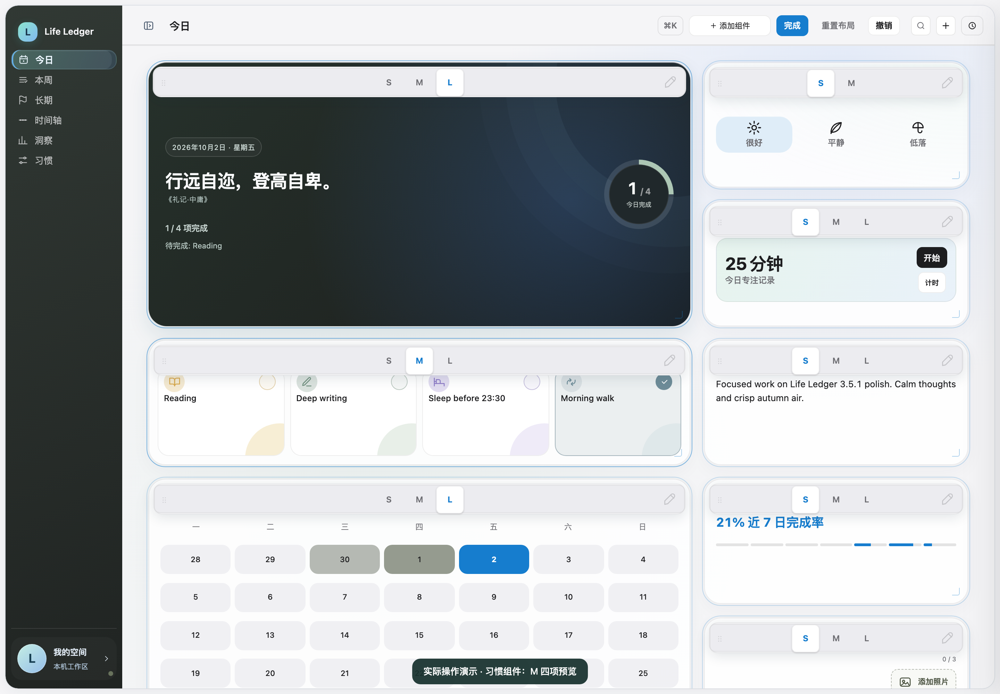
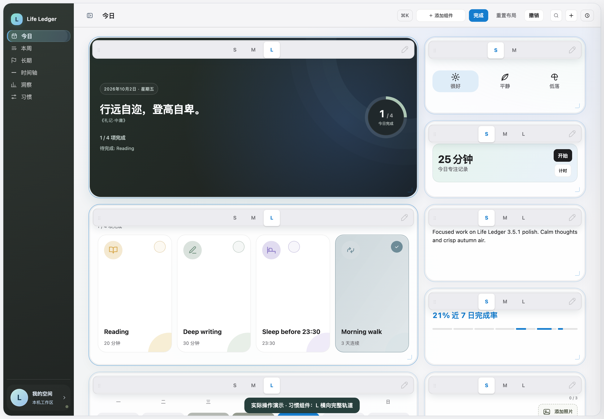
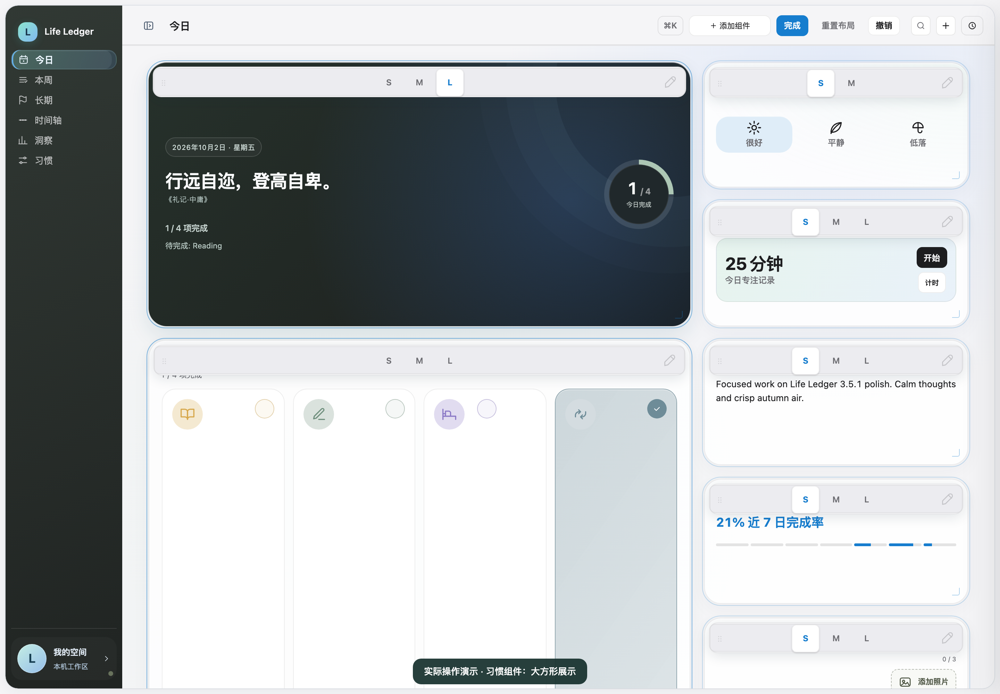
尺寸、真实落点、刷新持久化与跨断点不覆写存储由脚本核验；截图还需你亲自确认视觉效果。尚未打包、安装或发布。